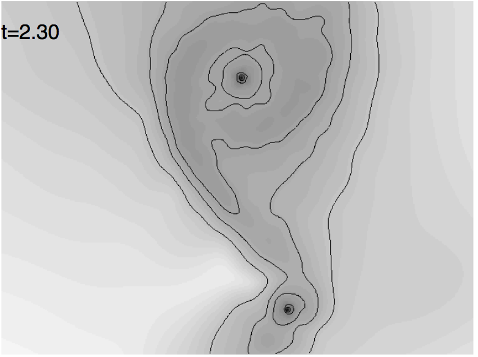

Star formation

I am very much interested to understand how stars form, with a clear preference to understand how binary stars form. While at Cardiff University, I particularly looked at this, for example how to form close binaries from wide ones, the role of gas cooling by dust during dynamical fragmentation, and looking at star-disc encounters, as well as coplanar and non-coplanar disc-disc encounters. Like for the simulations of stellar wind mass transfer, it is interesting to see many recent papers that seem to rediscover things that we did so many years ago!
I also looked at the structure of young star clusters. You can also read more about my research on young clusters here.